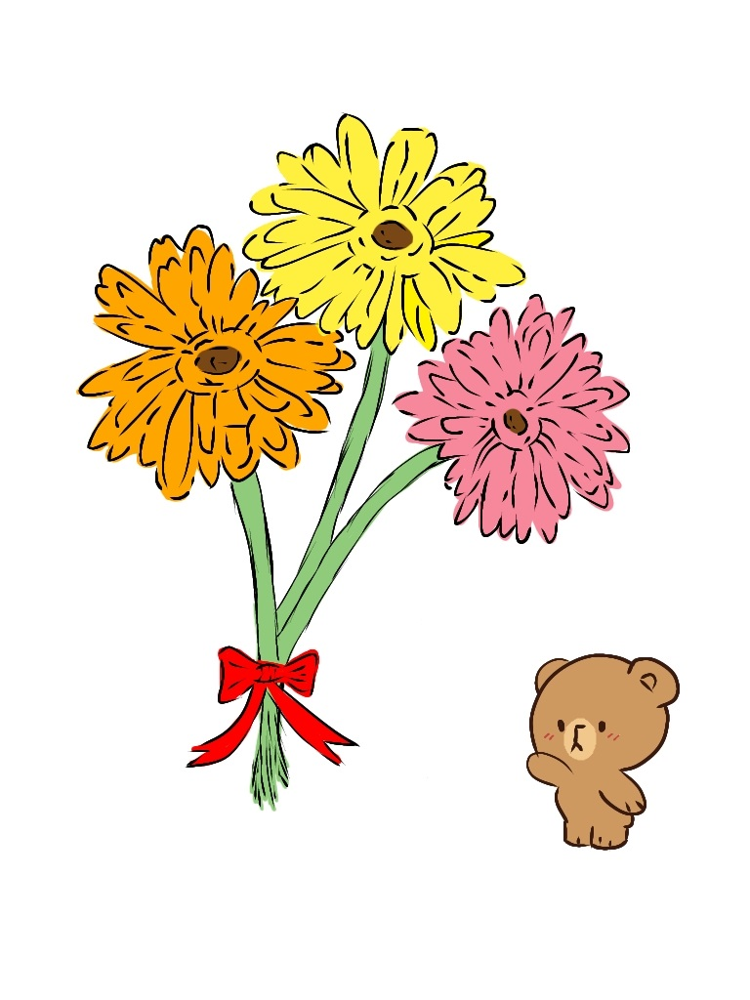

Kung sakaling di parin halata para sayo, I still like you. Walang nagbago sa loob ng isang buong buwan, nag hihintay parin akong kausapin mo ko, i chat mo ko, tawagin mo ko pag may kaylangan ka, and higit sa lahat ehh yung sabihin mong kagaya ko ehh na mimiss mo parin ako (might sound cringy but that's the word).
Last January ko pa gusto sabihin sayo to kaso kung naalala mo ayaw mo ko payagang kausapin ka noon. Hanggang sa nung araw din na yon ehh nakaramdam ako ng tungkol sa inyo ni Patrick. Kaya imbis na ipilit, nag decide na lang akong i keep sya and lahat ng mga nararamdaman ko in the coming days sa profile ni Kai.
Limang araw bago ko maconfirm na meron ngang something between you and pat, and dahil yon sa message mong nag tatanong kung mahirap ba yung binigay mong task sakin so mas hihirapan mo kay Pat. Hahahah di ko na maalala reply ko non kasi pag ka reply ko nanghina na rin agad ako ehh, la na ko nagawa hahahah. But one thing I did is I stopped posting my thoughts through Kai. Tapos in-unfirend ko yung main ko saka ko pinost ng ikaw lang makakakita yung email and password nya.
I kept cheking my gmail hoping na may mababasa akong "someone opened your account near..." Kaso wala hahahah, but maybe your just too busy or baka di mo lang nakita. Pero mas tumakbo sa isip ko? Is baka nakita mo and di mo pinansin kasi you decided to move on.
And tulad non triny kong maging ok din di lang para sayo but for Patrick na rin kasi I know naman how much of a good man Patrick is. Kaso kahit anong gawin ko di mawala wala yung nararamdaman ko sayo, I still like you Allaine. Kahit palagi ko kayong nakikitang magkasama ni Pat, kahit madalas kayo nag kukulitan sa room hahhaha, at kahit sa tuwing pag uwi ko at pag tingin ko sa Mei acc mo puro si Patrick lang nakikita ko.
Tanda mo nung pinakamusta mo ko kay syxie? I was very relieved na you're still thinking about how I am. Kaso yun din yung araw na kitang kita ko gano kalaki ngiti mo dahil kay Pat. Una habang magkausap tayo ni sander and nabanggit nyo kung panong hindi usually ganito ganiyan si Pat pero naiiba pag dating sayo lalo na sa tiktok (hahahah, babaw ng dahilan ko no?). Tapos dahil di pa sapat yon nag karon pa kayo ng mas malaking interaction nung hapon. And kahit gano ko man ka gustong makita yung mga ngiti mo, di ko naman kayang tiisin na iba dahilan kung bat ka nag kakaganon. And sa awa naman ng earpods ni pitong napagdesisyonan nya pang malobat habang pinag titripan mo si Pat hahahahah kaya di ko magawang di kayo pakinggan kahit sukong suko na yung puso ko. Kaya bumababa na lang ako para tumambay sa baba ng hagdan kaso hindi lang pla earpods ni pitong ang may awa, pati pala tadhana kasi wala pang sampung minuto ehh bumaba rin kayo ni Pat habang sabay na tumatawa hahahahah. Pababa palang dinig ko na tawa nyo kaya gusto ko sanang tumakbo papunta sa kabilang hagdan para di nyo makita kaso di na ko nakagalaw sa pwesto ko. So ending pagkadaan na pag kadaan nyo sa harap ko ehh umakyat agad ako. Pero kahit bumalik na si Pat sa training di parin kayo mawala sa isip ko to the point na di na ko nakasabay sa tinuturo, buti na lang last subject hahaha.
Pero kung ganitong nakitang kong masaya ka na pala kay Pat, edi bat pa kita ginagambala ngayon? Kasi yung mga ngiting yon, nakita ko rin habang sa akin ka mismo nakatingin habang magkasama tayo nung nakaraan. And di ko alam kung pano ipapaliwanag pero I was so sure that it's not just me na meron pang nararamdaman. Call me assuming or delusional or whatever pero I've been fixated in you eyes since the first time I saw them glare and yun din yung mga matang nakita ko habang nag aantay tayo sa science teachers. Alam ko for acads purposes lang sayo yon, pero not for me, it was everything to me.
Pero hindi lang mata at ngiti mo ang gumising sakin nung araw na yon. Kinagabihan nung bigla kang mag chat na gusto mong mag call na lang ng hindi sa gc. My heart jumped instantly in excitement (but then again, maybe acads lang yon lahat para sayo). Pero those jokes? Those comments? Those stories? And all those banats? Aaargggghh. Alam na alam mo kung pano mo ko kunin and patahimikin, like to the point na di na ko makapag salita ng maayossssss. Nauutal na nga ko kahit tayong dalawa lang ehhh or worse napapanoffmic pa ko bigla habang nag sasalita HAHAHAH.
Alam mo kung ano tumatakbo sa isip ko sa mga oras na yon? Na bakit di natin nagawa yon habang ok pa tayo? Kasi I really enjoyed it kahit naka off mic ka most of the time. Di ko alam kung dahil lang ba to sa matagal na tayong di nag uusap pero sobrang ok na ko dati sa presensya mo kahit sa chats lang sa tuwing busy days ka. Pero ngayon ko lang napagtanto na having you at the other end of the call is so much more different. Medyo nakakaselos lang nung brining up mong nagtatampo si Pat nung di mo nareplyan hahaha, pero all is well ako naman ka call mo. WHAHAHHA, nakipagkompetensya kala mo talaga may karapatan. Bakit ba kasi di natin ginawa dati yonnnnnn. WHAHAHHAH.
You know how hideous I am in arts but I also know that if I gave you real ones you'll just turn it down. So here's one for you... And I Mean It.
